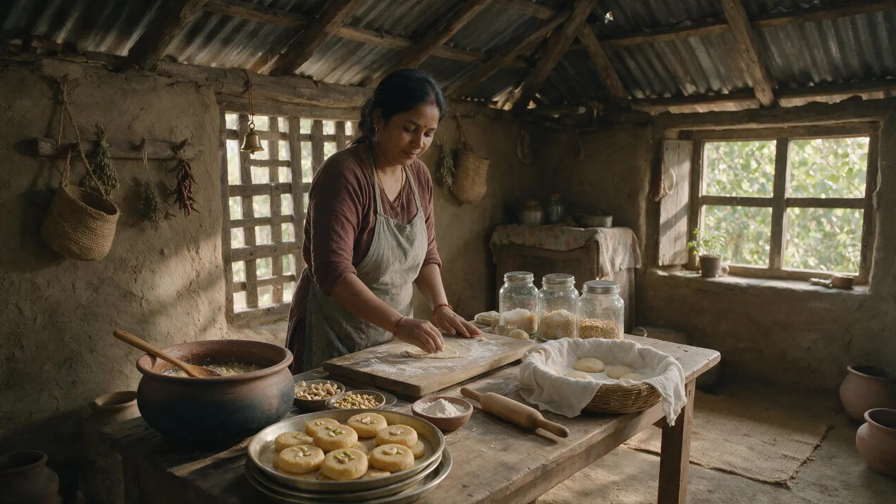
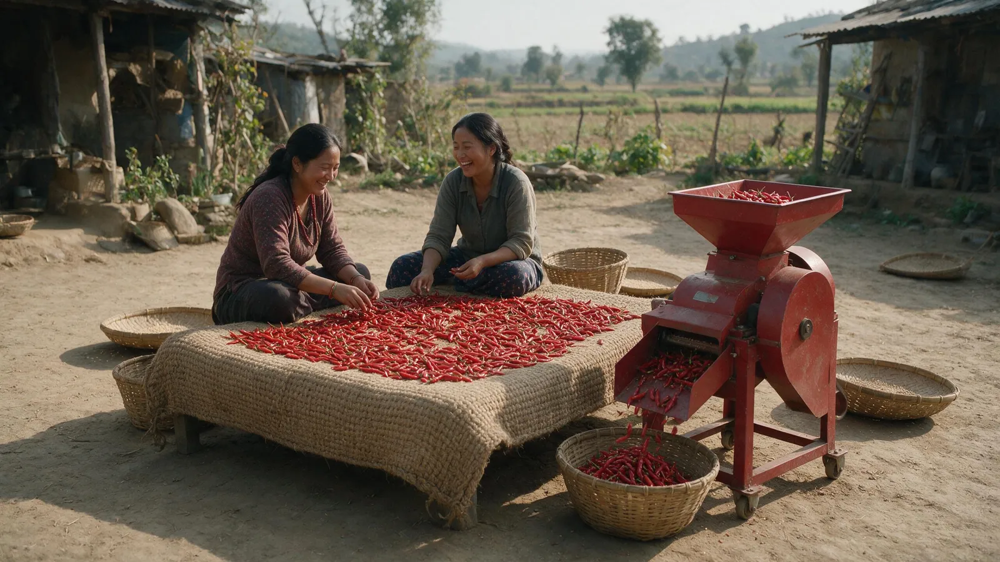
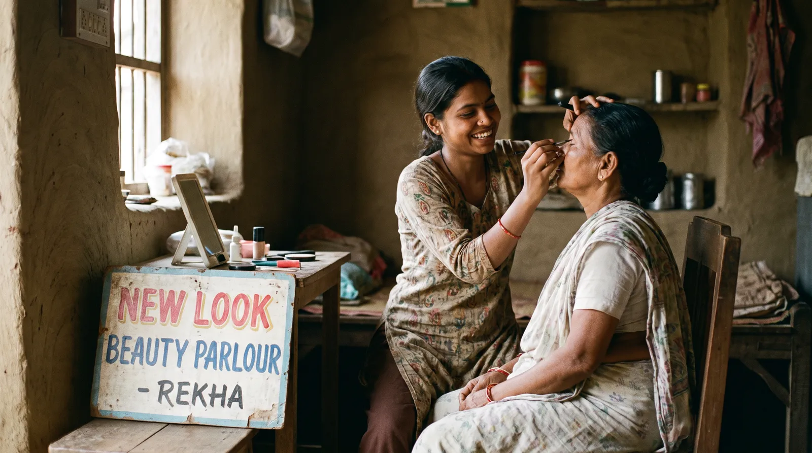
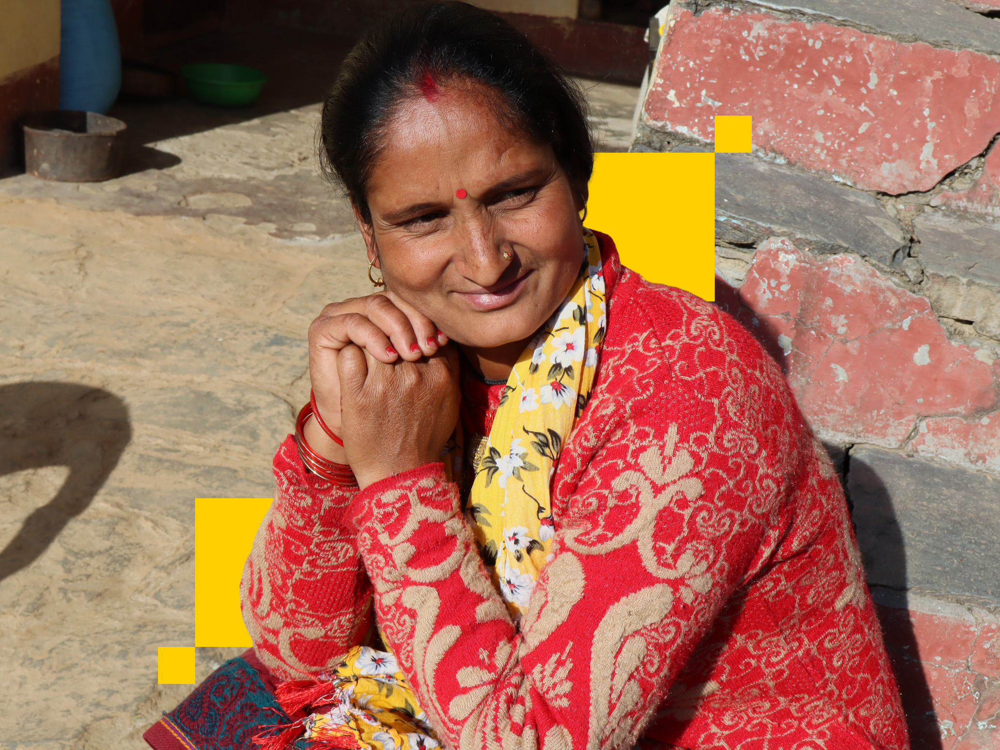

Making Her Way To The Bazaar
The journey from a life of informal labour to financial stability is a long one, but not impossible when someone has the right support.
View Story


This is how millions can climb with confidence towards one outcome: a truly irreversible increase in income.
Fund a cohort. Hold the ladder.
Your CSR should stay compliant, cost-efficient and catalytic. We co-create the strategy with you, then design, run and track programs built around your goals and the communities you want to reach, anywhere in the country. We have delivered 350+ programs for 250+ corporate partners, turning funding into measurable, long-term outcomes tracked against real metrics.
Foundations turn bold ideas into scaled impact. We bring sharp strategy and deep local networks to design programs that last, creating real change for communities and enduring value for your legacy. We have anchored 5 multi-funder collaboratives with 5 to 20x funding leverage, convening partners across the private, public, philanthropic, social and financial sectors.
Government drives development at scale, and we strengthen its reach. We support the adoption of India’s Digital Public Infrastructure, build scalable public goods and sharpen the delivery of schemes and services. We have worked with 15 government bodies to help programs reach the right citizens faster, more inclusively and with greater accountability.
Financial institutions grow by reaching the right customers. We connect you to creditworthy borrowers with minimal effort, using smart tools that assess eligibility and unlock government and philanthropic guarantees. We work with a network of 50+ partners, including financial institutions, to expand portfolios while keeping risk firmly in check.
147% increase in annual income

158% increase in annual income

Steady, consistently growing income

What changes when a rung holds
The journey from a life of informal labour to financial stability is a long one, but not impossible when someone has the right support.

Leadership doesn’t only exist in corporate boardrooms. Sunita Devi’s story is proof of that.
Avendus Capital's CSR moved from ad hoc, checkbook-style giving to a focused strategy built around women micro-entrepreneurship.
Samhita-CGF's collaborative work with Ambuja Cement Foundation, alongside Vinati Organics, Brihati Claris and Google, shows the impact unified effort can have on building an ecosystem of empowerment and resilience, with an ambitious focus ahead on expanding support for women.
Talent is equally distributed, but opportunity is not. Samhita-CGF's ecosystem-level approach is helping close that gap, especially for women and young adults entering the workforce.
Samhita-CGF's commitment to strong training content, quality trainers and the right resources has translated clearly into LEAP's outcomes.
Samhita-CGF's innovative financial tools achieved significant repayment and redeployment, letting 360 ONE Foundation's early funding create a strong multiplier impact for rural artisans and tribal farmers.
Strengthening urban health systems to bridge inequities for the urban poor in small cities.
Scale mental health solutions and build India’s pathway to a zero-burden future for mental health.
Fill out the form below and our team will get back to you shortly.